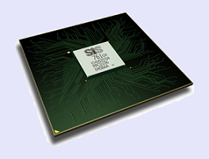
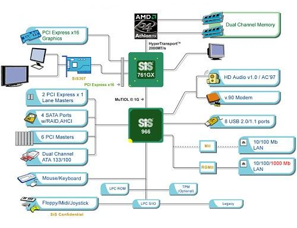

Střední průmyslová škola elektrotechniky a informatiky, Ostrava, příspěvková organizace
Chipsety
výukový modul EPO

Úvod
Co je to Chipset
Chlazení chipsetu
Nejznámější producenti Chipsetů:
Chipsety Intel
Chipsety AMD
Chipsety nVidia
Chipsety SiS
Porovnání chipsetů
Slovníček pojmů
Zadání DMP
Dokumentace
Použité zdroje
Čipová sada SiS 761GX:
Je to první čipset od firmy SiS pro platformu AMD64 s podporou sběrnice PCI-Express a integrovaným grafickým jádrem. Severní most nese označení SiS 761GX, obsahuje inegrovanou grafickou kartu SiS Mirage1, ovšem jen se softwarovou podporou DX9. Jižní most nese označení SiS 966.

Severní most (SiS 761GX):
Procesor:
- AMD Sempron, AMD Athlon 64, AMD Athlon 64 FX, AMD Opteron
- Patice 939
- FSB 1GHz HyperTransport
Grafické jádro:
- SiS Mirage1
- Softwarová podpora DX9
Jížní most (SiS 966):
- Technologie MuTIOL 1G
- 2 PCI-E sloty
- LAN - Ethernet 10/100/1000 Mb/s
- 7.1 High Definition Audio
- 8 portů USB 2.0
- 4x Seriál ATA-150
- 4x ATA 133
Blokové schéma:

Závěrem (doporučení pro praxi):
Společnost SiS touto čipovou sadou evidentně míří na nižší segment, viz pouze software podpora rozhraní DirectX 9.0. Jelikož má čipová sada integrované grafické jádro, tak je ideální do kanceláře, ale díky PCI Express 16x slotu je možné ji využít i pro hry.